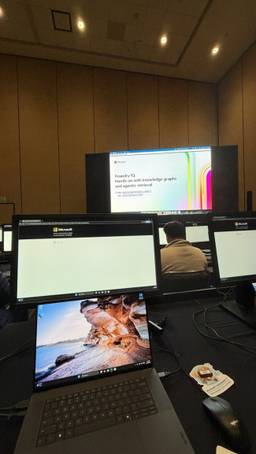
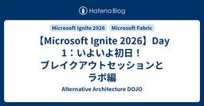
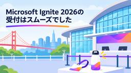
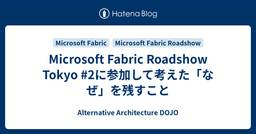

Alternative Architecture DOJO
https://aadojo.alterbooth.com/
オルターブースのクラウドネイティブ特化型ブログです。
フィード

【Microsoft Ignite 2026】Day 4：最終日を終えて
Alternative Architecture DOJO
はじめに 皆さんこんにちは、やしきんこと中屋敷です。 今日はいよいよ Microsoft Ignite 最終日、Day 4 です！ 本日はブレイクアウトセッションを2つ聞いてきたので、その内容についてまとめます。 最後に番外編として、Ignite に持っていってよかったものも紹介します。 [BRK330]Protect applications across code, cloud, and runtime 概要 前半は James Brotsos さんが Microsoft Defender による攻撃経路の見える化と調査を、後半は Ashish Jain さんが Azure のネットワーク…
6時間前

【Microsoft Ignite 2026】Day 3：The Hub のブースを回ってきました
Alternative Architecture DOJO
はじめに 皆さんこんにちは、やしきんこと中屋敷です。 今日は Microsoft Ignite Day 3 です！ 本日は The Hub のブースを回ってきたので、その中から印象に残ったブースを紹介します。 Microsoft ブースではいろいろ質問できたので、そのやりとりもまとめています。 The Hub の様子 The Hub はMoscone North ,Southにあり、非常に大きな規模でした。 午前中は比較的空いていてブースの方に話しかけやすいので、午前中に行くことをおすすめします！ The Hub のブース Microsoft × Mercedes-AMG PETRONAS F…
1日前

【Microsoft Ignite 2026】Day 3：ブレイクアウトセッションと Skills Quest に参加してきました
Alternative Architecture DOJO
はじめに 皆さんこんにちは、やしきんこと中屋敷です。 今日は Microsoft Ignite Day 3です！ 本日はブレイクアウトセッションを1つ聞いたのと、会場で開催されている Skills Quest に挑戦してきたので、その内容についてまとめます。 [BRK432]Running AI workloads efficiently on Azure general compute 概要 CPU ベースの汎用 VM を AI ワークロードでどう使い分けるか、というセッションでした。 前半は 新しい VM と Azure Boost の発表やデモ、後半は ChatGPT の裏側で汎用 VM…
1日前

Microsoft Ignite 2026のハンズオンコンテンツまとめ
Alternative Architecture DOJO
Microsoft Ignite 2026のハンズオンラボについて、GitHubで公開されているハンズオンリポジトリとセッションページの探し方を紹介しています。現地参加者向けのラボは現地限定ですが、MicrosoftのOrganization内に公開されたignite26-LAB***形式のリポジトリから、自宅でも内容を確認できます。記事執筆時点で公開が確認できたLAB650～LAB741までのセッション一覧も掲載しており、興味のあるテーマのラボを簡単に見つけて試すことができます。Ignite参加できなかった方や、カンファレンス後にハンズオン内容を復習したい方にも役立つ情報です。
1日前

【Microsoft Ignite 2026 Day 2】朝はキーノート、昼は雨で閉鎖、それでも夜はアフターパーティで大盛り上がり
Alternative Architecture DOJO
こんにちは、エンジニアの木村龍太郎です。Microsoft Ignite 2026 の Day 2 をお届けします！ Day 2 の流れはこんな感じでした。 午前：パートナーキーノート KEY02「Frontier Transformation」 午後： The Hub、LT視聴（雨漏りで中止） LAB673：Foundry IQ のハンズオン Skills Quest 夜：Celebration Party 午前のキーノート：KEY02 Frontier Transformation 午前中は、パートナー向けキーノート「Frontier Transformation」からスタートしました。F…
2日前

【Microsoft Ignite 2026】Day 2：ブレイクアウトセッションとラボ、公式パーティーに参加してきました
Alternative Architecture DOJO
皆さんこんにちは、やしきんこと中屋敷です。 今日は Microsoft Ignite Day 2 です！ 本日はブレイクアウトセッション、ラボ、そして夜の公式パーティーに参加してきたので、その内容についてまとめます。 ちなみに今日は雨で、会場へ向かう途中に足を滑らせて肩を強打してしまったので、雨の日の移動は気をつけてください……！ [BRK436]Scaling Azure infrastructure: From intelligence into enterprise impact 概要 Azure を支えるハードウェアとインフラの中身を紹介するセッションでした。 AI の普及で処理量が爆…
2日前

Microsoft Ignite 2026 Day 1：Opening Keynote の内容を紹介！
Alternative Architecture DOJO
皆さんこんにちは、エンジニアの木村龍太郎です。 Microsoft Ignite 2026 の キーノートに参加したので紹介します！ なお、キーノート自体は既に YouTube で公開されているので、後でじっくり見返すこともできます。 Opening Keynote（公式動画）：https://www.youtube.com/watch?v=ZR4v1c4CClc Book of News（公式）：https://news.microsoft.com/events/ignite/2026/live-news/?ocid=FY27_soc_omc_br_LI_Blog 弊社から参加しているほか2…
3日前

【Microsoft Ignite 2026】Day 1：いよいよ初日！ブレイクアウトセッションとラボ編
Alternative Architecture DOJO
はじめに 皆さんこんにちは、やしきんこと中屋敷です。 Microsoft Ignite 2026 の Day 1 では、Keynoteのほかに、ブレイクアウトセッションとラボにも参加してきました。 Keynoteについては別の記事にまとめているので、この記事ではセッションとラボの内容を紹介します。 aadojo.alterbooth.com [BRK414]Inside Azure engineering: Lessons from our own frontier transformation Microsoft 社内のエンジニアリングチームが、AI を業務にどう取り入れているかを3つの事例…
3日前

Microsoft Ignite 2026 Day1 キーノート＋Azure Catalystの印象
Alternative Architecture DOJO
こんにちは、MLBお兄さんこと松村です。 いよいよ Microsoft Ignite 2026 が始まりました！ 会場は Chase Center で、ホテル周辺からはシャトルバスで移動することができます。会場は NBA のスタジアムということで、音響がすごかったです。 キーノートは翻訳アプリのリアルタイム翻訳をしならが聞きたかったですが、ネットワークが不安定だったので、オフライン文字起こしをしながら聞くことにしました。 既にキーノートは YouTube で公開されているので、また後でじっくり見ようと思います。 www.youtube.com キーノートはほぼ Microsoft Copilo…
3日前

【Microsoft Ignite 2026】Day 1：いよいよ初日！Keynote編
Alternative Architecture DOJO
はじめに 皆さんこんにちは、やしきんこと中屋敷です。 今日はMicrosoft Ignite Day 1です！Keynote、LAB、Sessionを聞いてきたので、本記事ではKeynoteについて会場の雰囲気から内容までをまとめました。 Keynote会場に並ぶ 開場は8時半以降ですが、その時間に行くと例年すでにたくさんの待機列ができていると聞いたので、早めに会場に着いて待機列に並ぶことにしました。 だいたい7時すぎくらいに並び始めて、8時半ごろ入場しました。 並んでいるときはとても寒いので、暖かい格好で並ぶのがおすすめです！ 会場の待機列 朝ごはん 会場では朝ごはんが用意されていました。フ…
3日前

AWS re:Invent 2026のセッション選びが難しすぎたのでAIに任せてみた
Alternative Architecture DOJO
こんにちは、我が家には飼い猫はいないのですが、娘が100均で猫じゃらしを買っていたので、何に使うのか聞くと「りのちゃん(先日入手した猫のぬいぐるみ)と遊ぶんだよ！」と言っていました。家に帰るとぬいぐるみの操作と吹き替えと猫じゃらしの操作と一人二役で忙しそうにしているのを微笑ましく見守った木村です。 今年、2026年11月30日から12月4日にラスベガスで開催される「AWS re:Invent 2026」に初参加することになりました。 前回は、AWSのユーザーグループ運営者向け支援制度「User Group Leaders re:Invent Grants」に採択され、参加が決まるまでの経緯を紹…
4日前

【Microsoft Ignite 2026】Day 0：前日参加登録してきました！現在のサンフランシスコの様子もお届け！
Alternative Architecture DOJO
こんにちは！オルターブースの木村龍太郎です！ Microsoft Ignite 2026に参加するため、アメリカ・サンフランシスコに来ています！ この記事では、イベント前日（Day 0）のレジストレーションの様子と、現地で感じたサンフランシスコの様子をお届けします。 セッションやラボの技術レポートは、別記事で書く予定です。 レジストレーションは顔認証であっという間でした 会場のMoscone Westで参加登録をしてきました。 Moscone West 事前に日本で顔認証の登録を済ませていたため、スムーズにバッジを受け取れました！Swagとしてウォーターボトルもいただきました。 レジストの顔認…
4日前

Microsoft Ignite 2026に参加します！受付がスムーズでした
Alternative Architecture DOJO
Microsoft Ignite 2026参加のためサンフランシスコを訪れ、開催前日の受付の様子を紹介します。Moscone Westでは開始予定時刻より早く受付が始まり、事前登録した顔認証とパスポート提示でスムーズにバッジを受け取れました。参加者向けスワッグや会場の場所など、イベント開始前の準備についてもお伝えします。
4日前

【Microsoft Ignite 2026】Day 0：レジストレーションに行ってきました
Alternative Architecture DOJO
こんにちは、アメリカ・サンフランシスコからやしきんこと中屋敷です！ 今日はMicrosoft IgniteのDay 0ということで、レジストレーション（参加登録）の様子をお届けします！ レジストレーション レジストレーションは11時からの予定だったので、少し散歩をしてからMicrosoft Igniteの会場に向かいました。 今回は事前に顔認証を登録していたので、受付は本当にあっという間でした。1分もかからずに手続きが完了しました。 入国審査のように英語での受け答えにドキドキしましたが、パスポートとQRを見せて無事手続きでき一安心しました。 顔認証受付の様子 ノベルティ ノベルティとして、サン…
5日前

GitHub CopilotのBYOKでローカルLLMを使う ～Foundry Localで実機検証～
Alternative Architecture DOJO
GitHub Copilotで利用できるAIモデルは、GitHubが提供するモデルだけではありません。 VS CodeのBYOK（Bring Your Own Key）を使えば、クラウド上のAIサービスだけでなく、自分のPC上で動作するローカルLLMも追加できます。 今回は、Microsoft の Foundry Local を使ってWindows PC上にローカルLLM環境を構築し、Phi-4-miniをGitHub Copilotのチャットから利用してみます。 また、実際にローカルで推論が行われていることを確認するとともに、企業でGitHub Copilotを利用する場合のBYOKの管理ポ…
6日前

Microsoft Fabric Roadshow Tokyo #2 参加レポート：データ基盤の先を見据えた Microsoft Fabric の展望
Alternative Architecture DOJO
クラウドソリューション部の清島です。 2026年11月12日(木)に開催された Microsoft Fabric Roadshow Tokyo #2 に参加してきました。 https://msevents.microsoft.com/event?id=147131444 タイトルの通り Microsoft Fabric に関する様々なトラックが用意されていました。 イベント全体を通して、個人的に印象に残った内容をまとめてお伝えします。 Microsoft Fabric Roadshow Tokyo #2 について イベント情報 日程：2026年11月12日(木) 会場：日本マイクロソフト株式会…
7日前

Microsoft Fabric Roadshow Tokyo #2に参加して考えた「なぜ」を残すこと
Alternative Architecture DOJO
Microsoft Fabric Roadshow Tokyo #2に参加して、自分が「データ」として捉えていた範囲が少し広がりました。今回特に印象に残った「経緯・価値観」という視点から、AI時代に「今」だけでなく「なぜ」を残すことについて考えます。
8日前

GitHub Actions「pull_request_target」12月2日から既定ブロック｜影響と管理者が必要な対応を解説
Alternative Architecture DOJO
GitHubは2026年11月2日、パブリックリポジトリにおいて、GitHub Actionsのpull_request_targetイベントを2026年12月2日から既定でブロックすると発表しました。 この変更により、pull_request_targetを利用するワークフローは、Actionsのイベントポリシーで明示的に許可されていない場合、原則として実行できなくなります。継続して利用するには、ワークフローの安全性を確認したうえで、必要に応じて許可設定を行う必要があります。 pull_request_targetは、Pull Request（以下、PR）の作成や更新などをきっかけにワークフ…
13日前
GitHub Repository Insightsの使い方｜Issue・PR・コミットを分析して開発改善につなげる
Alternative Architecture DOJO
GitHubのリポジトリには、日々の開発で作成されたIssueやPull Request（PR）、コミットの履歴が蓄積されています。しかし、振り返りの場で「今月はコミットが何件あった」「PRが何件マージされた」と確認するだけでは、次の開発サイクルで何を変えるべきかは見えてきません。 大切なのは、数字から変化を発見し、その背景について仮説を立て、改善策を試して次の期間に確かめることです。 本記事では、GitHubのRepository InsightsにあるPulse／Commits／Contributors／Code frequencyを取り上げ、確認できる情報と、開発プロセスの改善への活かし…
14日前
GitHub Copilot Fusionとは？HydraFusion・Autoの統合とEnterprise管理を解説
Alternative Architecture DOJO
最近、VS CodeでGitHub Copilotを利用していて、「あれ？ モデル選択からAutoがなくなった？」と思った方もいるのではないでしょうか。 実は、従来のAutoによる自動モデル選択と、複数のAIモデルを組み合わせる「HydraFusion」が統合され、新たに「GitHub Copilot Fusion」として提供されています。 以前、「GitHub Copilotに登場した『HydraFusion』とは？複数のAIモデルを組み合わせる新機能を解説」という記事で、HydraFusionの仕組みを紹介しましたが、2026年10月28日、サンフランシスコで開催されたGitHub Uni…
18日前
GitHub Copilot AppのProject機能で複数リポジトリにまたがる作業を行う
Alternative Architecture DOJO
指定されたスキルの指示と、記事執筆スタイルの関連ルールを確認してから、添付記事の内容に沿って100〜200字のSEO向け概要を作成します。 Ask モードのため、記事ファイル自体は変更せず、概要文だけお返しします。Read skill `summarize`GitHub Copilot AppのProject機能を使い、フロントエンドとバックエンドの複数リポジトリにまたがるアプリ開発を実践します。プロジェクトの作成から、タスクの依頼、各リポジトリでの実装、プルリクエストのマージまでを紹介。カスタム指示やメモリー、セッション参照などの設定方法も解説します。
18日前
AWS re:Invent 2026に初参加します！ 〜UG Leaders Grant採択までの道のり〜
Alternative Architecture DOJO
こんにちは、先日健康診断から帰ってきた妻の採血跡を見た娘が「あ、ママ血抜きしてる！」と言うので「魚か！」と突っ込んだ木村です。 今年、2026年11月30日から12月4日にラスベガスで開催される「AWS re:Invent 2026」に、初めて参加することになりました！ これまで長年AWSのユーザーコミュニティで活動してきましたが、実はre:Inventへの参加は今回が初めてです。 参加のきっかけになったのは、AWSのユーザーグループ運営者を対象とした支援制度「User Group Leaders re:Invent Grants(以下、UGL Grants)」に採択されたことでした。 ありが…
19日前
GitHub Universe 2026 参加レポート：今日から試せるエージェント駆動開発
Alternative Architecture DOJO
エンジニアのみっつーです！ 今回サンフランシスコで開催された GitHub Universe 2026 の各セッションに参加して、全体的に感じたことと新機能の活用方法をまとめます！ 今回セッションの種類は大きくエージェントと各機能の使い方やセキュリティ、ワークフローの自動化、開発チームおよび組織の文化醸成の話に分けられ、エージェント駆動開発も以前に比べれば形が定まってきたもののまだまだ過渡期であるように感じました。 過渡期である中でトライ&エラーを繰り返すために、ワークフロー改善や社内文化の向上が大きな効果を発揮しているとも取れます。 特にセキュリティ面は以前に増して関心の高いポイントになって…
20日前
GitHub Copilot Assisted permissionsを検証｜企業利用での注意点
Alternative Architecture DOJO
GitHub CopilotのAgentモードでは、ターミナルコマンドの実行などでユーザーの承認が必要になることがあります。操作内容を確認できる一方、頻繁な承認要求は開発作業の効率を下げる要因にもなります。 こうした承認をAIが支援する機能として登場したのが、GitHub Copilotの Assisted permissions です。 本記事では、VS Codeの既存の承認ルールとの関係を整理し、Assisted permissionsによって承認動作がどのように変わるのか、実際に検証してみます。 GitHub Copilotの承認の仕組み VS CodeのGitHub Copilotでは…
20日前
GitHub Copilot Hooksで何ができる？4つのユースケースと組織での活用方法
Alternative Architecture DOJO
GitHub Copilotのカスタマイズには、Custom Instructions、Custom Agents、Agent Skills、MCPなどがあります。開発ルールの共有、専用エージェントの定義、外部ツールとの連携など、用途に応じて使い分けられます。 これらに加えて、Hooksという仕組みも用意されています。Hooksは、AIエージェントのツール実行前後など、決まったタイミングで指定した処理を実行する機能です。 例えば、コード編集後の自動整形やLint、危険な操作のブロック、Copilotが実行したツール操作のログ記録などに利用できます。今回はVS Codeで確認した4つの動作と、組…
21日前
【GitHub Universe 2026 現地参加 Day2レポート】AI開発の品質・コスト・セキュリティをどう両立する？
Alternative Architecture DOJO
GitHub Universe 2026のDay2を現地から振り返ります。お客様からよくいただく品質・コスト・セキュリティの相談を切り口に、Copilot Fusionやセキュリティ機能の注目発表を営業目線でわかりやすく紹介。初参加の感想や、現地で感じたGitHubならではの文化にも触れています。
22日前
一般提供されたGitHub Actionsのロックファイルを既存のワークフローに適用する
Alternative Architecture DOJO
GitHub Actionsのワークフローロックファイルが一般提供されました。GitHub CLI拡張機能「gh actions-lock」を使い、既存ワークフローのアクションをタグ指定やSHA指定からロックファイルに変換する手順を紹介します。アクションのバージョンを固定し、依存関係の変更やサプライチェーン攻撃のリスクを抑える方法を解説します。
23日前
GitHub Universe 2026 Opening Keynote に参加しました！
Alternative Architecture DOJO
エンジニアのみっつーです！ 私はいま、サンフランシスコで開催されている GitHub Universe 2026 に来ています！ 本投稿では、速報として Opening Keynote の主なトピックを抜粋してお知らせします！ Copilot Fusion：タスクに合わせてモデルを自動振り分け まずは、Copilot Fusion の一般提供（GA）が発表されました！ Route and orchestrate models with GitHub Copilot Fusion - GitHub Changelog Copilot Fusion は、指示内容に合った AI モデルを選択し、さら…
23日前
【GitHub Universe 2026 現地参加 Day1レポート】GitHub EnterpriseとCopilotがひとつのライセンスに！
Alternative Architecture DOJO
GitHub Universe 2026のDay1を現地からレポート！遊び心あふれる会場の様子と、GitHub Enterprise CloudにCopilotの利用権が含まれる新しい契約方式を紹介します。シート料金・AI利用料の違いや、既存プランの継続可否など、管理者が押さえたいポイントを営業目線で整理しました。
24日前
GitHub Copilotのローカルサンドボックスとは？VS Codeでの検証も踏まえて解説します
Alternative Architecture DOJO
GitHub CopilotのAgentモードでは、コードの編集からコマンド実行、テストまで、さまざまな作業をAIエージェントに任せられます。一方、自律的な実行が進むと、作業対象外のファイル変更や意図しない外部通信への備えが必要になります。 こうした課題に関係する機能が、GitHub Copilotのローカルサンドボックス（Local Sandboxing）です。GitHubは2026年10月7日に一般提供（GA）を発表しました。 今回は、WindowsのVS Codeで確認した動作と、Enterpriseでの管理方法を紹介します。 ローカルサンドボックスとは ローカルサンドボックスは、Cop…
1ヶ月前